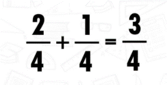
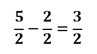
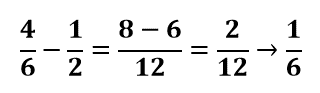

Operaciones con Fracciones
Operaciones con Fracciones
Para poder realizar operaciones con fracciones es importante recordar e identificar las partes de una fracción. Las fracciones están formadas por dos números: el numerador y el denominador. El denominador de una fracción, que nunca no puede ser cero e indica el número de partes iguales en que se divide la unidad. El numerador, indica las partes iguales que tomamos de la cantidad medida.
Suma de fracciones
La adición o suma de fracciones es una de las operaciones básicas que permite combinar dos o más fracciones en un número equivalente, al cual se le conoce como “Suma” o “Resultado de la Suma”.Para obtener el valor numérico en forma de fracciones, primeramente se debe identificar si la suma de fracciones tiene el mismo denominador o diferente denominador, por lo tanto, se tienen dos procedimientos:
Suma de fracciones con mismo denominador: La suma de fracciones con el mismo denominador o también conocida como suma de fracciones homogéneas es el procedimiento más simplificado y sencillo, ya que el proceso de la suma se basa en sumar los numeradores y el denominador se mantiene igual.

Suma de fracciones con mismo denominador: Para realizar una suma de fracciones con diferente denominador o también conocida como suma de fracciones heterogéneas, se recomienda saber obtener el mínimo común múltiplo (m.c.m.), ya que podemos simplificar las ecuaciones. El procedimiento para relsolver este tipo de suma es el siguiente:
- Primeramente, debemos multiplicar los denominadores de las fracciones.
- Posteriormente debemos multiplicar numerador con denominador, es decir, el numerador de la fracción número 1 se multiplica con el denominador de la fracción número 2.
- Ahora, de igual forma multiplicamos numerador con denominador, pero ahora el numerador de la fracción número 2 se multiplica con el denominador de la fracción 1.
- Por último, se suman los resultados de las multiplicaciones de numeradores con denominadores y se mantiene el resultado del producto de los denominadores.
Resta de fracciones
La sustracción o resta de fracciones es una de las operaciones básicas que permite obtener la diferencia entre dos fracciones en una fracción equivalente, al cual se le conoce como "diferencia" o "Resta". Para obtener el valor numérico en forma de fracción, primeramente se debe identificar si la resta de fracciones tiene el mismo denominador o diferente denominador, por lo tanto, se tienen dos procedimientos:
Resta de fracciones con mismo denominador: La resta de fracciones con el mismo denominador o también conocida como resta de fracciones homogéneas es el procedimiento más simplificado y sencillo, ya que el procedimiento de la resta se basa en restar los numeradores y el denominador se mantiene igual.

Resta de fracciones con diferente denominador:Para realizar una resta de fracciones con diferente denominador o también conocida como resta de fracciones heterogéneas, se recomienda saber obtener el mínimo común múltiplo (m.c.m.), ya que podemos simplificar las ecuaciones. El procedimiento para relsolver este tipo de resta es el siguiente:
- Primeramente, debemos multiplicar los denominadores de las fracciones.
- Posteriormente debemos multiplicar numerador con denominador, es decir, el numerador de la fracción número 1 se multiplica con el denominador de la fracción número 2.

Vídeos para reforzar lo aprendido
Cuestionario para reforzar lo aprendido